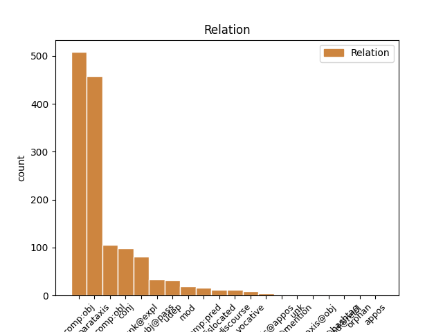
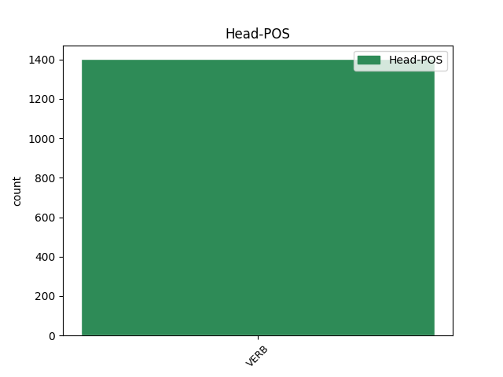
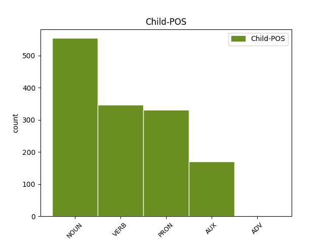

Distribution of features within this leaf



Agreement Rules sorted by frequency.
- When the dependent token is the direct object complements(comp:obj) of the head token, and the head token is VERB and the dependent token is NOUN.
1 Ho avere VERB V Mood=Ind|Number=Sing|Person=1|Tense=Pres|VerbForm=Fin 0 _ _ _
2 un' _ _ _ _ 0 _ _ _
3 idea idea NOUN S Gender=Fem|Number=Sing 1 comp:obj _ _
4 rivoluzionaria _ _ _ _ 0 _ _ _
5 : _ _ _ _ 0 _ _ _
6 che _ _ _ _ 0 _ _ _
7 sia _ _ _ _ 0 _ _ _
8 possibile _ _ _ _ 0 _ _ _
9 licenziare _ _ _ _ 0 _ _ _
10 chi _ _ _ _ 0 _ _ _
11 insegna _ _ _ _ 0 _ _ _
12 male _ _ _ _ 0 _ _ _
13 oltre _ _ _ _ 0 _ _ _
14 a _ _ _ _ 0 _ _ _
15 premiare _ _ _ _ 0 _ _ _
16 chi _ _ _ _ 0 _ _ _
17 insegna _ _ _ _ 0 _ _ _
18 bene _ _ _ _ 0 _ _ _
19 . _ _ _ _ 0 _ _ _
20 #labuonascuola _ _ _ _ 0 _ _ _
1 Porta _ _ _ _ 0 _ _ _
2 a _ _ _ _ 0 _ _ _
3 Porta _ _ _ _ 0 _ _ _
4 compie compiere VERB V Mood=Ind|Number=Sing|Person=3|Tense=Pres|VerbForm=Fin 0 _ _ _
5 vent’ _ _ _ _ 0 _ _ _
6 anni _ _ _ _ 0 _ _ _
7 . _ _ _ _ 0 _ _ _
8 Ecco _ _ _ _ 0 _ _ _
9 perché _ _ _ _ 0 _ _ _
10 Berlusconi _ _ _ _ 0 _ _ _
11 non _ _ _ _ 0 _ _ _
12 ci _ _ _ _ 0 _ _ _
13 va _ _ _ _ 0 _ _ _
14 più _ _ _ _ 0 _ _ _
15 . _ _ _ _ 0 _ _ _
16 [ _ _ _ _ 0 _ _ _
17 CONTINUA continuare VERB V Mood=Ind|Number=Sing|Person=3|Tense=Pres|VerbForm=Fin 4 parataxis _ _
18 su _ _ _ _ 0 _ _ _
19 http://t.co/oDPUtx2DvV _ _ _ _ 0 _ _ _
20 ] _ _ _ _ 0 _ _ _
1 #tfaordinario _ _ _ _ 0 _ _ _
2 è _ _ _ _ 0 _ _ _
3 stato _ _ _ _ 0 _ _ _
4 il _ _ _ _ 0 _ _ _
5 fondo _ _ _ _ 0 _ _ _
6 cassa _ _ _ _ 0 _ _ _
7 per _ _ _ _ 0 _ _ _
8 la _ _ _ _ 0 _ _ _
9 riforma _ _ _ _ 0 _ _ _
10 di _ _ _ _ 0 _ _ _
11 la _ _ _ _ 0 _ _ _
12 #labuonascuola _ _ _ _ 0 _ _ _
13 di _ _ _ _ 0 _ _ _
14 @user _ _ _ _ 0 _ _ _
15 . _ _ _ _ 0 _ _ _
16 Beneficienza _ _ _ _ 0 _ _ _
17 la la PRON PC Clitic=Yes|Gender=Fem|Number=Sing|Person=3|PronType=Prs 18 comp:obj _ _
18 faccio fare VERB V Mood=Ind|Number=Sing|Person=1|Tense=Pres|VerbForm=Fin 0 _ _ _
19 quando _ _ _ _ 0 _ _ _
20 dico _ _ _ _ 0 _ _ _
21 io _ _ _ _ 0 _ _ _
22 !!!! _ _ _ _ 0 _ _ _
1 Salvini _ _ _ _ 0 _ _ _
2 : _ _ _ _ 0 _ _ _
3 " _ _ _ _ 0 _ _ _
4 A _ _ _ _ 0 _ _ _
5 settembre _ _ _ _ 0 _ _ _
6 fermerò fermare VERB V Mood=Ind|Number=Sing|Person=1|Tense=Fut|VerbForm=Fin 0 _ _ _
7 l' _ _ _ _ 0 _ _ _
8 Italia _ _ _ _ 0 _ _ _
9 per _ _ _ _ 0 _ _ _
10 tre _ _ _ _ 0 _ _ _
11 giorni _ _ _ _ 0 _ _ _
12 " _ _ _ _ 0 _ _ _
13 . _ _ _ _ 0 _ _ _
14 Si _ _ _ _ 0 _ _ _
15 sta stare AUX VA Mood=Ind|Number=Sing|Person=3|Tense=Pres|VerbForm=Fin 6 parataxis _ _
16 preparando _ _ _ _ 0 _ _ _
17 a _ _ _ _ 0 _ _ _
18 dire _ _ _ _ 0 _ _ _
19 la _ _ _ _ 0 _ _ _
20 stronzata _ _ _ _ 0 _ _ _
21 definitiva _ _ _ _ 0 _ _ _
22 . _ _ _ _ 0 _ _ _
23 [ _ _ _ _ 0 _ _ _
24 comagirl00 _ _ _ _ 0 _ _ _
25 ] _ _ _ _ 0 _ _ _
1 @user _ _ _ _ 0 _ _ _
2 sei _ _ _ _ 0 _ _ _
3 nà _ _ _ _ 0 _ _ _
4 sola _ _ _ _ 0 _ _ _
5 ! _ _ _ _ 0 _ _ _
6 Torna _ _ _ _ 0 _ _ _
7 a _ _ _ _ 0 _ _ _
8 scuola _ _ _ _ 0 _ _ _
9 che _ _ _ _ 0 _ _ _
10 ti ti PRON PC Clitic=Yes|Number=Sing|Person=2|PronType=Prs 11 comp:obl _ _
11 fa fare VERB V Mood=Ind|Number=Sing|Person=3|Tense=Pres|VerbForm=Fin 0 _ _ _
12 bene _ _ _ _ 0 _ _ _
13 . _ _ _ _ 0 _ _ _
14 #labuonascuola _ _ _ _ 0 _ _ _
1 Ok _ _ _ _ 0 _ _ _
2 @user _ _ _ _ 0 _ _ _
3 ho _ _ _ _ 0 _ _ _
4 capito _ _ _ _ 0 _ _ _
5 torno tornare VERB V Mood=Ind|Number=Sing|Person=1|Tense=Pres|VerbForm=Fin 0 _ _ _
6 a _ _ _ _ 0 _ _ _
7 fare _ _ _ _ 0 _ _ _
8 esami _ _ _ _ 0 _ _ _
9 per _ _ _ _ 0 _ _ _
10 il _ _ _ _ 0 _ _ _
11 debito _ _ _ _ 0 _ _ _
12 , _ _ _ _ 0 _ _ _
13 torno tornare VERB V Mood=Ind|Number=Sing|Person=1|Tense=Pres|VerbForm=Fin 5 conj _ _
14 a _ _ _ _ 0 _ _ _
15 lavorare _ _ _ _ 0 _ _ _
16 che _ _ _ _ 0 _ _ _
17 è _ _ _ _ 0 _ _ _
18 meglio _ _ _ _ 0 _ _ _
19 ! _ _ _ _ 0 _ _ _
20 #labuonascuola _ _ _ _ 0 _ _ _
1 06 _ _ _ _ 0 _ _ _
2 . _ _ _ _ 0 _ _ _
3 10 _ _ _ _ 0 _ _ _
4 . _ _ _ _ 0 _ _ _
5 14 _ _ _ _ 0 _ _ _
6 - _ _ _ _ 0 _ _ _
7 Arriva arrivare VERB V Mood=Ind|Number=Sing|Person=3|Tense=Pres|VerbForm=Fin 0 _ _ _
8 la _ _ _ _ 0 _ _ _
9 " _ _ _ _ 0 _ _ _
10 buona _ _ _ _ 0 _ _ _
11 scuola _ _ _ _ 0 _ _ _
12 " _ _ _ _ 0 _ _ _
13 . _ _ _ _ 0 _ _ _
14 Si _ _ _ _ 0 _ _ _
15 salvi _ _ _ _ 0 _ _ _
16 chi _ _ _ _ 0 _ _ _
17 può _ _ _ _ 0 _ _ _
18 ! _ _ _ _ 0 _ _ _
19 : _ _ _ _ 0 _ _ _
20 Comunicato comunicato NOUN S Gender=Masc|Number=Sing 7 parataxis _ _
21 Il _ _ _ _ 0 _ _ _
22 sindacato _ _ _ _ 0 _ _ _
23 è _ _ _ _ 0 _ _ _
24 un' _ _ _ _ 0 _ _ _
25 altra _ _ _ _ 0 _ _ _
26 cosa _ _ _ _ 0 _ _ _
27 - _ _ _ _ 0 _ _ _
28 FLC _ _ _ _ 0 _ _ _
29 ( _ _ _ _ 0 _ _ _
30 ... _ _ _ _ 0 _ _ _
31 ) _ _ _ _ 0 _ _ _
32 http://t.co/GBkUfwRJ5s _ _ _ _ 0 _ _ _
1 @user1 _ _ _ _ 0 _ _ _
2 @user2 _ _ _ _ 0 _ _ _
3 @user3 _ _ _ _ 0 _ _ _
4 #labuonascuola _ _ _ _ 0 _ _ _
5 siamo _ _ _ _ 0 _ _ _
6 noi _ _ _ _ 0 _ _ _
7 docenti _ _ _ _ 0 _ _ _
8 di _ _ _ _ 0 _ _ _
9 le _ _ _ _ 0 _ _ _
10 GI _ _ _ _ 0 _ _ _
11 infetti _ _ _ _ 0 _ _ _
12 da _ _ _ _ 0 _ _ _
13 supplentite _ _ _ _ 0 _ _ _
14 #MIDAperRUOLO _ _ _ _ 0 _ _ _
15 ce ce PRON PC Clitic=Yes|Number=Plur|Person=1|PronType=Prs 17 unk@expl _ _
16 lo _ _ _ _ 0 _ _ _
17 meritiamo meritare VERB V Mood=Ind|Number=Plur|Person=1|Tense=Pres|VerbForm=Fin 0 _ _ _
18 tutti _ _ _ _ 0 _ _ _
19 !! _ _ _ _ 0 _ _ _
1 #annuncite _ _ _ _ 0 _ _ _
2 Varata _ _ _ _ 0 _ _ _
3 #labuonascuola _ _ _ _ 0 _ _ _
4 . _ _ _ _ 0 _ _ _
5 gov _ _ _ _ 0 _ _ _
6 per _ _ _ _ 0 _ _ _
7 il _ _ _ _ 0 _ _ _
8 2015 _ _ _ _ 0 _ _ _
9 si _ _ _ _ 0 _ _ _
10 tagliano tagliare VERB V Mood=Ind|Number=Plur|Person=3|Tense=Pres|VerbForm=Fin 0 _ _ _
11 148 _ _ _ _ 0 _ _ _
12 milioni milione NOUN S Gender=Masc|Number=Plur 10 subj@pass _ _
13 a _ _ _ _ 0 _ _ _
14 la _ _ _ _ 0 _ _ _
15 scuola _ _ _ _ 0 _ _ _
16 pubblica _ _ _ _ 0 _ _ _
17 e _ _ _ _ 0 _ _ _
18 se _ _ _ _ 0 _ _ _
19 ne _ _ _ _ 0 _ _ _
20 danno _ _ _ _ 0 _ _ _
21 200 _ _ _ _ 0 _ _ _
22 a _ _ _ _ 0 _ _ _
23 la _ _ _ _ 0 _ _ _
24 privata _ _ _ _ 0 _ _ _
1 Charlie _ _ _ _ 0 _ _ _
2 Hebdo _ _ _ _ 0 _ _ _
3 in _ _ _ _ 0 _ _ _
4 edicola _ _ _ _ 0 _ _ _
5 insieme _ _ _ _ 0 _ _ _
6 a _ _ _ _ 0 _ _ _
7 il _ _ _ _ 0 _ _ _
8 Fatto _ _ _ _ 0 _ _ _
9 Quotidiano _ _ _ _ 0 _ _ _
10 . _ _ _ _ 0 _ _ _
11 Per _ _ _ _ 0 _ _ _
12 cui _ _ _ _ 0 _ _ _
13 si _ _ _ _ 0 _ _ _
14 riderà ridere VERB V Mood=Ind|Number=Sing|Person=3|Tense=Fut|VerbForm=Fin 0 _ _ _
15 il _ _ _ _ 0 _ _ _
16 doppio doppio NOUN S Gender=Masc|Number=Sing 14 udep _ SpaceAfter=No
17 . _ _ _ _ 0 _ _ _
18 [ _ _ _ _ 0 _ _ _
19 xanax _ _ _ _ 0 _ _ _
20 ] _ _ _ _ 0 _ _ _
1 È _ _ _ _ 0 _ _ _
2 morto _ _ _ _ 0 _ _ _
3 l' _ _ _ _ 0 _ _ _
4 autore _ _ _ _ 0 _ _ _
5 di _ _ _ _ 0 _ _ _
6 " _ _ _ _ 0 _ _ _
7 E _ _ _ _ 0 _ _ _
8 se _ _ _ _ 0 _ _ _
9 domani _ _ _ _ 0 _ _ _
10 " _ _ _ _ 0 _ _ _
11 . _ _ _ _ 0 _ _ _
12 E _ _ _ _ 0 _ _ _
13 sottolineo sottolineare VERB V Mood=Ind|Number=Sing|Person=1|Tense=Pres|VerbForm=Fin 0 _ _ _
14 morto morire VERB V Gender=Masc|Number=Sing|Tense=Past|VerbForm=Part 13 comp:obj _ SpaceAfter=No
15 . _ _ _ _ 0 _ _ _
16 [ _ _ _ _ 0 _ _ _
17 pietro _ _ _ _ 0 _ _ _
18 angelio _ _ _ _ 0 _ _ _
19 ] _ _ _ _ 0 _ _ _
1 @user _ _ _ _ 0 _ _ _
2 e _ _ _ _ 0 _ _ _
3 meno _ _ _ _ 0 _ _ _
4 male _ _ _ _ 0 _ _ _
5 che _ _ _ _ 0 _ _ _
6 la _ _ _ _ 0 _ _ _
7 scuola _ _ _ _ 0 _ _ _
8 serve _ _ _ _ 0 _ _ _
9 per _ _ _ _ 0 _ _ _
10 educare _ _ _ _ 0 _ _ _
11 . _ _ _ _ 0 _ _ _
12 Il _ _ _ _ 0 _ _ _
13 Caovur _ _ _ _ 0 _ _ _
14 sembra _ _ _ _ 0 _ _ _
15 essere _ _ _ _ 0 _ _ _
16 diventato diventare VERB V Gender=Masc|Number=Sing|Tense=Past|VerbForm=Part 0 _ _ _
17 una _ _ _ _ 0 _ _ _
18 tribuna tribuna NOUN S Gender=Fem|Number=Sing 16 comp:pred _ _
19 politica _ _ _ _ 0 _ _ _
20 . _ _ _ _ 0 _ _ _
21 #labuonascuola _ _ _ _ 0 _ _ _
1 @user _ _ _ _ 0 _ _ _
2 anche _ _ _ _ 0 _ _ _
3 riuscisse riuscire VERB V Mood=Sub|Number=Sing|Person=3|Tense=Imp|VerbForm=Fin 15 mod _ _
4 A _ _ _ _ 0 _ _ _
5 fare _ _ _ _ 0 _ _ _
6 tutte _ _ _ _ 0 _ _ _
7 le _ _ _ _ 0 _ _ _
8 riforme _ _ _ _ 0 _ _ _
9 + _ _ _ _ 0 _ _ _
10 belle _ _ _ _ 0 _ _ _
11 E _ _ _ _ 0 _ _ _
12 buone _ _ _ _ 0 _ _ _
13 ma _ _ _ _ 0 _ _ _
14 come _ _ _ _ 0 _ _ _
15 crede credere VERB V Mood=Ind|Number=Sing|Person=3|Tense=Pres|VerbForm=Fin 0 _ _ _
16 di _ _ _ _ 0 _ _ _
17 Fuggire _ _ _ _ 0 _ _ _
18 l' _ _ _ _ 0 _ _ _
19 ira _ _ _ _ 0 _ _ _
20 di _ _ _ _ 0 _ _ _
21 DIO _ _ _ _ 0 _ _ _
22 . _ _ _ _ 0 _ _ _
23 #labuonascuola _ _ _ _ 0 _ _ _
24 , _ _ _ _ 0 _ _ _
25 #JobsAct _ _ _ _ 0 _ _ _
26 .. _ _ _ _ 0 _ _ _
27 non _ _ _ _ 0 _ _ _
28 ci _ _ _ _ 0 _ _ _
29 siamo _ _ _ _ 0 _ _ _
1 #labuonascuola _ _ _ _ 0 _ _ _
2 NO _ _ _ _ 0 _ _ _
3 A _ _ _ _ 0 _ _ _
4 LA _ _ _ _ 0 _ _ _
5 SUPPLENTITE _ _ _ _ 0 _ _ _
6 ! _ _ _ _ 0 _ _ _
7 SI _ _ _ _ 0 _ _ _
8 A _ _ _ _ 0 _ _ _
9 LA _ _ _ _ 0 _ _ _
10 SUPPOSTITE _ _ _ _ 0 _ _ _
11 ! _ _ _ _ 0 _ _ _
12 Insegnanti insegnante NOUN S Number=Plur 13 vocative _ _
13 preparate preparare VERB V Mood=Imp|Number=Plur|Person=2|Tense=Pres|VerbForm=Fin 0 _ _ _
14 i _ _ _ _ 0 _ _ _
15 vostri _ _ _ _ 0 _ _ _
16 CULI _ _ _ _ 0 _ _ _
17 ! _ _ _ _ 0 _ _ _
1 @user _ _ _ _ 0 _ _ _
2 solo _ _ _ _ 0 _ _ _
3 con _ _ _ _ 0 _ _ _
4 il _ _ _ _ 0 _ _ _
5 governo _ _ _ _ 0 _ _ _
6 Monti _ _ _ _ 0 _ _ _
7 non _ _ _ _ 0 _ _ _
8 funziona funzionare VERB V Mood=Ind|Number=Sing|Person=3|Tense=Pres|VerbForm=Fin 0 _ _ _
9 , _ _ _ _ 0 _ _ _
10 dannazione dannazione NOUN S Gender=Fem|Number=Sing 8 discourse _ SpaceAfter=No
11 . _ _ _ _ 0 _ _ _
1 #Renzie _ _ _ _ 0 _ _ _
2 promette promettere VERB V Mood=Ind|Number=Sing|Person=3|Tense=Pres|VerbForm=Fin 0 _ _ _
3 di _ _ _ _ 0 _ _ _
4 investire _ _ _ _ 0 _ _ _
5 su _ _ _ _ 0 _ _ _
6 #labuonascuola _ _ _ _ 0 _ _ _
7 , _ _ _ _ 0 _ _ _
8 ma _ _ _ _ 0 _ _ _
9 vuole volere AUX VM Mood=Ind|Number=Sing|Person=3|Tense=Pres|VerbForm=Fin 2 conj _ _
10 tagliare _ _ _ _ 0 _ _ _
11 il _ _ _ _ 0 _ _ _
12 3 _ _ _ _ 0 _ _ _
13 % _ _ _ _ 0 _ _ _
14 di _ _ _ _ 0 _ _ _
15 spesa _ _ _ _ 0 _ _ _
16 da _ _ _ _ 0 _ _ _
17 tutti _ _ _ _ 0 _ _ _
18 Ministeri _ _ _ _ 0 _ _ _
19 ( _ _ _ _ 0 _ _ _
20 anche _ _ _ _ 0 _ _ _
21 MIUR _ _ _ _ 0 _ _ _
22 ) _ _ _ _ 0 _ _ _
23 #EffettoSottoZeroConGelato _ _ _ _ 0 _ _ _
1 #tfaordinario _ _ _ _ 0 _ _ _
2 è _ _ _ _ 0 _ _ _
3 stato _ _ _ _ 0 _ _ _
4 il _ _ _ _ 0 _ _ _
5 fondo _ _ _ _ 0 _ _ _
6 cassa _ _ _ _ 0 _ _ _
7 per _ _ _ _ 0 _ _ _
8 la _ _ _ _ 0 _ _ _
9 riforma _ _ _ _ 0 _ _ _
10 di _ _ _ _ 0 _ _ _
11 la _ _ _ _ 0 _ _ _
12 #labuonascuola _ _ _ _ 0 _ _ _
13 di _ _ _ _ 0 _ _ _
14 @user _ _ _ _ 0 _ _ _
15 . _ _ _ _ 0 _ _ _
16 Beneficienza Beneficienza NOUN S Gender=Fem|Number=Sing 18 dislocated _ _
17 la _ _ _ _ 0 _ _ _
18 faccio fare VERB V Mood=Ind|Number=Sing|Person=1|Tense=Pres|VerbForm=Fin 0 _ _ _
19 quando _ _ _ _ 0 _ _ _
20 dico _ _ _ _ 0 _ _ _
21 io _ _ _ _ 0 _ _ _
22 !!!! _ _ _ _ 0 _ _ _
1 Sai sapere VERB V Mood=Ind|Number=Sing|Person=2|Tense=Pres|VerbForm=Fin 0 _ _ _
2 dove _ _ _ _ 0 _ _ _
3 te _ _ _ _ 0 _ _ _
4 la _ _ _ _ 0 _ _ _
5 puoi potere AUX VM Mood=Ind|Number=Sing|Person=2|Tense=Pres|VerbForm=Fin 1 comp:obj _ _
6 ficcare _ _ _ _ 0 _ _ _
7 la _ _ _ _ 0 _ _ _
8 buona _ _ _ _ 0 _ _ _
9 scuola _ _ _ _ 0 _ _ _
10 ? _ _ _ _ 0 _ _ _
11 Vieni _ _ _ _ 0 _ _ _
12 ci _ _ _ _ 0 _ _ _
13 a _ _ _ _ 0 _ _ _
14 trovare _ _ _ _ 0 _ _ _
15 a _ _ _ _ 0 _ _ _
16 scuola _ _ _ _ 0 _ _ _
17 . _ _ _ _ 0 _ _ _
18 Vivi _ _ _ _ 0 _ _ _
19 anni _ _ _ _ 0 _ _ _
20 da _ _ _ _ 0 _ _ _
21 precario _ _ _ _ 0 _ _ _
22 d _ _ _ _ 0 _ _ _
23 3 _ _ _ _ 0 _ _ _
24 fascia _ _ _ _ 0 _ _ _
25 che _ _ _ _ 0 _ _ _
26 vuoi _ _ _ _ 0 _ _ _
27 cancellare _ _ _ _ 0 _ _ _
28 . _ _ _ _ 0 _ _ _
1 Berlusconi _ _ _ _ 0 _ _ _
2 : _ _ _ _ 0 _ _ _
3 “ _ _ _ _ 0 _ _ _
4 Bergoglio _ _ _ _ 0 _ _ _
5 fa fare VERB V Mood=Ind|Number=Sing|Person=3|Tense=Pres|VerbForm=Fin 0 _ _ _
6 il _ _ _ _ 0 _ _ _
7 Papa _ _ _ _ 0 _ _ _
8 come _ _ _ _ 0 _ _ _
9 l' _ _ _ _ 0 _ _ _
10 avrei avere AUX VA Mood=Cnd|Number=Sing|Person=1|Tense=Pres|VerbForm=Fin 5 mod _ _
11 fatto _ _ _ _ 0 _ _ _
12 io _ _ _ _ 0 _ _ _
13 “ _ _ _ _ 0 _ _ _
14 . _ _ _ _ 0 _ _ _
15 Con _ _ _ _ 0 _ _ _
16 i _ _ _ _ 0 _ _ _
17 nostri _ _ _ _ 0 _ _ _
18 soldi _ _ _ _ 0 _ _ _
19 . _ _ _ _ 0 _ _ _
20 [ _ _ _ _ 0 _ _ _
21 @user _ _ _ _ 0 _ _ _
22 ] _ _ _ _ 0 _ _ _
1 La _ _ _ _ 0 _ _ _
2 buona _ _ _ _ 0 _ _ _
3 scuola _ _ _ _ 0 _ _ _
4 passerà _ _ _ _ 0 _ _ _
5 a _ _ _ _ 0 _ _ _
6 forza _ _ _ _ 0 _ _ _
7 di _ _ _ _ 0 _ _ _
8 manganellate _ _ _ _ 0 _ _ _
9 . _ _ _ _ 0 _ _ _
10 Ascolto ascoltare VERB V Mood=Ind|Number=Sing|Person=1|Tense=Pres|VerbForm=Fin 0 _ _ _
11 tutti _ _ _ _ 0 _ _ _
12 , _ _ _ _ 0 _ _ _
13 manganello manganello NOUN S Gender=Masc|Number=Sing 10 conj _ _
14 alcuni _ _ _ _ 0 _ _ _
15 . _ _ _ _ 0 _ _ _
16 http://t.co/pMZj1VfbYq _ _ _ _ 0 _ _ _
1 Roma _ _ _ _ 0 _ _ _
2 , _ _ _ _ 0 _ _ _
3 nomade _ _ _ _ 0 _ _ _
4 defeca _ _ _ _ 0 _ _ _
5 davanti _ _ _ _ 0 _ _ _
6 a _ _ _ _ 0 _ _ _
7 il _ _ _ _ 0 _ _ _
8 Quirinale _ _ _ _ 0 _ _ _
9 . _ _ _ _ 0 _ _ _
10 Avendo _ _ _ _ 0 _ _ _
11 lo _ _ _ _ 0 _ _ _
12 trovato trovare VERB V Gender=Masc|Number=Sing|Tense=Past|VerbForm=Part 0 _ _ _
13 occupato occupato VERB V Gender=Masc|Number=Sing|Tense=Past|VerbForm=Part 12 comp:pred _ SpaceAfter=No
14 . _ _ _ _ 0 _ _ _
15 [ _ _ _ _ 0 _ _ _
16 @user _ _ _ _ 0 _ _ _
17 ] _ _ _ _ 0 _ _ _
1 Questo _ _ _ _ 0 _ _ _
2 non _ _ _ _ 0 _ _ _
3 è _ _ _ _ 0 _ _ _
4 un _ _ _ _ 0 _ _ _
5 paese _ _ _ _ 0 _ _ _
6 per _ _ _ _ 0 _ _ _
7 giovani _ _ _ _ 0 _ _ _
8 . _ _ _ _ 0 _ _ _
9 Avrei _ _ _ _ 0 _ _ _
10 voluto volere VERB V Gender=Masc|Number=Sing|Tense=Past|VerbForm=Part 0 _ _ _
11 che _ _ _ _ 0 _ _ _
12 la _ _ _ _ 0 _ _ _
13 prima _ _ _ _ 0 _ _ _
14 riforma _ _ _ _ 0 _ _ _
15 di _ _ _ _ 0 _ _ _
16 il _ _ _ _ 0 _ _ _
17 governo _ _ _ _ 0 _ _ _
18 #Monti _ _ _ _ 0 _ _ _
19 fosse essere AUX VA Mood=Sub|Number=Sing|Person=3|Tense=Imp|VerbForm=Fin 10 comp:pred _ _
20 stata _ _ _ _ 0 _ _ _
21 quella _ _ _ _ 0 _ _ _
22 di _ _ _ _ 0 _ _ _
23 il _ _ _ _ 0 _ _ _
24 lavoro _ _ _ _ 0 _ _ _
25 , _ _ _ _ 0 _ _ _
26 non _ _ _ _ 0 _ _ _
27 di _ _ _ _ 0 _ _ _
28 le _ _ _ _ 0 _ _ _
29 pensioni _ _ _ _ 0 _ _ _
30 . _ _ _ _ 0 _ _ _
1 Prendete _ _ _ _ 0 _ _ _
2 tutti _ _ _ _ 0 _ _ _
3 gli _ _ _ _ 0 _ _ _
4 studenti _ _ _ _ 0 _ _ _
5 e _ _ _ _ 0 _ _ _
6 mettete _ _ _ _ 0 _ _ _
7 li _ _ _ _ 0 _ _ _
8 su _ _ _ _ 0 _ _ _
9 l' _ _ _ _ 0 _ _ _
10 Hogwarts _ _ _ _ 0 _ _ _
11 Express _ _ _ _ 0 _ _ _
12 ! _ _ _ _ 0 _ _ _
13 Riforma _ _ _ _ 0 _ _ _
14 fatta fare VERB V Gender=Fem|Number=Sing|Tense=Past|VerbForm=Part 0 _ _ _
15 , _ _ _ _ 0 _ _ _
16 avanti _ _ _ _ 0 _ _ _
17 un' _ _ _ _ 0 _ _ _
18 altra altro PRON PI Gender=Fem|Number=Sing|PronType=Ind 14 conj _ _
19 #labuonascuola _ _ _ _ 0 _ _ _
1 @user _ _ _ _ 0 _ _ _
2 passo passo NOUN S Gender=Masc|Number=Sing 6 mod _ _
3 dopo _ _ _ _ 0 _ _ _
4 passo _ _ _ _ 0 _ _ _
5 si _ _ _ _ 0 _ _ _
6 procede procedere VERB V Mood=Ind|Number=Sing|Person=3|Tense=Pres|VerbForm=Fin 0 _ _ _
7 verso _ _ _ _ 0 _ _ _
8 il _ _ _ _ 0 _ _ _
9 baratro _ _ _ _ 0 _ _ _
10 .... _ _ _ _ 0 _ _ _
11 #labuonascuola _ _ _ _ 0 _ _ _
1 #MIDAperRUOLO _ _ _ _ 0 _ _ _
2 gli _ _ _ _ 0 _ _ _
3 abilitati _ _ _ _ 0 _ _ _
4 di _ _ _ _ 0 _ _ _
5 2 _ _ _ _ 0 _ _ _
6 fascia _ _ _ _ 0 _ _ _
7 hanno avere VERB V Mood=Ind|Number=Plur|Person=3|Tense=Pres|VerbForm=Fin 0 _ _ _
8 tutto _ _ _ _ 0 _ _ _
9 ciò _ _ _ _ 0 _ _ _
10 che _ _ _ _ 0 _ _ _
11 serve _ _ _ _ 0 _ _ _
12 per _ _ _ _ 0 _ _ _
13 una _ _ _ _ 0 _ _ _
14 buona _ _ _ _ 0 _ _ _
15 scuola _ _ _ _ 0 _ _ _
16 : _ _ _ _ 0 _ _ _
17 titoli _ _ _ _ 0 _ _ _
18 , _ _ _ _ 0 _ _ _
19 esperienza _ _ _ _ 0 _ _ _
20 e _ _ _ _ 0 _ _ _
21 capacità _ _ _ _ 0 _ _ _
22 e _ _ _ _ 0 _ _ _
23 voi voi PRON PE Number=Plur|Person=2|PronType=Prs 7 parataxis _ _
24 che _ _ _ _ 0 _ _ _
25 siete _ _ _ _ 0 _ _ _
26 a _ _ _ _ 0 _ _ _
27 il _ _ _ _ 0 _ _ _
28 governo _ _ _ _ 0 _ _ _
29 ? _ _ _ _ 0 _ _ _
1 @user _ _ _ _ 0 _ _ _
2 adesso _ _ _ _ 0 _ _ _
3 ci _ _ _ _ 0 _ _ _
4 rimandano rimandare VERB V Mood=Ind|Number=Plur|Person=3|Tense=Pres|VerbForm=Fin 0 _ _ _
5 tutti tutto PRON PI Gender=Masc|Number=Plur|PronType=Ind 4 udep _ _
6 a _ _ _ _ 0 _ _ _
7 #labuonascuola _ _ _ _ 0 _ _ _
8 , _ _ _ _ 0 _ _ _
9 vai _ _ _ _ 0 _ _ _
10 tranquilla _ _ _ _ 0 _ _ _
11 . _ _ _ _ 0 _ _ _
1 RT _ _ _ _ 0 _ _ _
2 @user _ _ _ _ 0 _ _ _
3 : _ _ _ _ 0 _ _ _
4 Facebook _ _ _ _ 0 _ _ _
5 , _ _ _ _ 0 _ _ _
6 ci _ _ _ _ 0 _ _ _
7 sono essere VERB V Mood=Ind|Number=Plur|Person=3|Tense=Pres|VerbForm=Fin 0 _ _ _
8 3 _ _ _ _ 0 _ _ _
9 tipi _ _ _ _ 0 _ _ _
10 di _ _ _ _ 0 _ _ _
11 foto _ _ _ _ 0 _ _ _
12 profilo _ _ _ _ 0 _ _ _
13 : _ _ _ _ 0 _ _ _
14 1 _ _ _ _ 0 _ _ _
15 ) _ _ _ _ 0 _ _ _
16 tette tetta NOUN S Gender=Fem|Number=Plur 7 parataxis@appos _ _
17 - _ _ _ _ 0 _ _ _
18 culo _ _ _ _ 0 _ _ _
19 . _ _ _ _ 0 _ _ _
20 2 _ _ _ _ 0 _ _ _
21 ) _ _ _ _ 0 _ _ _
22 riga _ _ _ _ 0 _ _ _
23 laterale _ _ _ _ 0 _ _ _
24 tattica _ _ _ _ 0 _ _ _
25 che _ _ _ _ 0 _ _ _
26 copre _ _ _ _ 0 _ _ _
27 tutta _ _ _ _ 0 _ _ _
28 la _ _ _ _ 0 _ _ _
29 faccia _ _ _ _ 0 _ _ _
30 3) _ _ _ _ 0 _ _ _
31 foto _ _ _ _ 0 _ _ _
32 occhio _ _ _ _ 0 _ _ _
33 ( _ _ _ _ 0 _ _ _
34 ri… _ _ _ _ 0 _ _ _
1 #Giannini _ _ _ _ 0 _ _ _
2 , _ _ _ _ 0 _ _ _
3 detta dire VERB V Gender=Fem|Number=Sing|Tense=Past|VerbForm=Part 0 _ _ _
4 anche _ _ _ _ 0 _ _ _
5 la _ _ _ _ 0 _ _ _
6 campionessa campione NOUN S Gender=Fem|Number=Sing 3 appos _ _
7 di _ _ _ _ 0 _ _ _
8 arrampicata _ _ _ _ 0 _ _ _
9 su _ _ _ _ 0 _ _ _
10 gli _ _ _ _ 0 _ _ _
11 specchi _ _ _ _ 0 _ _ _
12 http://t.co/1HGhjQ4ySO _ _ _ _ 0 _ _ _
13 #labuonascuola _ _ _ _ 0 _ _ _
14 ?! _ _ _ _ 0 _ _ _
15 #M5S _ _ _ _ 0 _ _ _
16 @user1 _ _ _ _ 0 _ _ _
17 @user2 _ _ _ _ 0 _ _ _
1 Berlusconi _ _ _ _ 0 _ _ _
2 dice dire VERB V Mood=Ind|Number=Sing|Person=3|Tense=Pres|VerbForm=Fin 0 _ _ _
3 sì _ _ _ _ 0 _ _ _
4 a _ _ _ _ 0 _ _ _
5 il _ _ _ _ 0 _ _ _
6 governo _ _ _ _ 0 _ _ _
7 Monti _ _ _ _ 0 _ _ _
8 . _ _ _ _ 0 _ _ _
9 di _ _ _ _ 0 _ _ _
10 il _ _ _ _ 0 _ _ _
11 resto _ _ _ _ 0 _ _ _
12 , _ _ _ _ 0 _ _ _
13 è essere AUX V Mood=Ind|Number=Sing|Person=3|Tense=Pres|VerbForm=Fin 2 discourse _ _
14 un' _ _ _ _ 0 _ _ _
15 ammucchiata _ _ _ _ 0 _ _ _
16 . _ _ _ _ 0 _ _ _
17 #fb _ _ _ _ 0 _ _ _
1 Renzi _ _ _ _ 0 _ _ _
2 pubblica pubblicare VERB V Mood=Ind|Number=Sing|Person=3|Tense=Pres|VerbForm=Fin 0 _ _ _
3 un _ _ _ _ 0 _ _ _
4 selfie _ _ _ _ 0 _ _ _
5 intitolato _ _ _ _ 0 _ _ _
6 “ _ _ _ _ 0 _ _ _
7 io _ _ _ _ 0 _ _ _
8 “ _ _ _ _ 0 _ _ _
9 ma _ _ _ _ 0 _ _ _
10 lo _ _ _ _ 0 _ _ _
11 rimuove _ _ _ _ 0 _ _ _
12 subito _ _ _ _ 0 _ _ _
13 . _ _ _ _ 0 _ _ _
14 Mancava _ _ _ _ 0 _ _ _
15 una _ _ _ _ 0 _ _ _
16 D _ _ _ _ 0 _ _ _
17 . _ _ _ _ 0 _ _ _
18 [ _ _ _ _ 0 _ _ _
19 violadelpensiero violadelpensiero NOUN S Gender=Masc|Number=Sing 2 vocative@mention _ SpaceAfter=No
20 ] _ _ _ _ 0 _ _ _
1 Governo _ _ _ _ 0 _ _ _
2 Monti _ _ _ _ 0 _ _ _
3 : _ _ _ _ 0 _ _ _
4 aspetta _ _ _ _ 0 _ _ _
5 e _ _ _ _ 0 _ _ _
6 spread _ _ _ _ 0 _ _ _
7 il _ _ _ _ 0 _ _ _
8 titolo _ _ _ _ 0 _ _ _
9 di _ _ _ _ 0 _ _ _
10 oggi _ _ _ _ 0 _ _ _
11 di _ _ _ _ 0 _ _ _
12 #agorarai _ _ _ _ 0 _ _ _
13 ci _ _ _ _ 0 _ _ _
14 piace piacere VERB V Mood=Ind|Number=Sing|Person=3|Tense=Pres|VerbForm=Fin 0 _ _ _
15 , _ _ _ _ 0 _ _ _
16 tipo tipo NOUN S Gender=Masc|Number=Sing 14 unk _ _
17 scarrafone _ _ _ _ 0 _ _ _
18 ecc _ _ _ _ 0 _ _ _
19 . _ _ _ _ 0 _ _ _
20 ecc _ _ _ _ 0 _ _ _
21 . _ _ _ _ 0 _ _ _
1 Ciarrapico _ _ _ _ 0 _ _ _
2 : _ _ _ _ 0 _ _ _
3 Comunque _ _ _ _ 0 _ _ _
4 sa sapere VERB V Mood=Ind|Number=Sing|Person=3|Tense=Pres|VerbForm=Fin 0 _ _ _
5 quale _ _ _ _ 0 _ _ _
6 è _ _ _ _ 0 _ _ _
7 il _ _ _ _ 0 _ _ _
8 problema _ _ _ _ 0 _ _ _
9 di _ _ _ _ 0 _ _ _
10 il _ _ _ _ 0 _ _ _
11 governo _ _ _ _ 0 _ _ _
12 Monti _ _ _ _ 0 _ _ _
13 ? _ _ _ _ 0 _ _ _
14 Quale quale PRON PQ Number=Sing|PronType=Int 4 parataxis@appos _ SpaceAfter=No
15 , _ _ _ _ 0 _ _ _
16 senatore _ _ _ _ 0 _ _ _
17 ? _ _ _ _ 0 _ _ _
18 Che _ _ _ _ 0 _ _ _
19 so' _ _ _ _ 0 _ _ _
20 troppo _ _ _ _ 0 _ _ _
21 brutti _ _ _ _ 0 _ _ _
22 #Ahahahahah _ _ _ _ 0 _ _ _
1 Non _ _ _ _ 0 _ _ _
2 so _ _ _ _ 0 _ _ _
3 se _ _ _ _ 0 _ _ _
4 @user _ _ _ _ 0 _ _ _
5 risolleverà _ _ _ _ 0 _ _ _
6 l' _ _ _ _ 0 _ _ _
7 Italia _ _ _ _ 0 _ _ _
8 , _ _ _ _ 0 _ _ _
9 ma _ _ _ _ 0 _ _ _
10 di _ _ _ _ 0 _ _ _
11 una _ _ _ _ 0 _ _ _
12 cosa _ _ _ _ 0 _ _ _
13 sono _ _ _ _ 0 _ _ _
14 certo _ _ _ _ 0 _ _ _
15 : _ _ _ _ 0 _ _ _
16 come _ _ _ _ 0 _ _ _
17 usa usare VERB V Mood=Ind|Number=Sing|Person=3|Tense=Pres|VerbForm=Fin 0 _ _ _
18 lui _ _ _ _ 0 _ _ _
19 power _ _ _ _ 0 _ _ _
20 point _ _ _ _ 0 _ _ _
21 e _ _ _ _ 0 _ _ _
22 #Keynote _ _ _ _ 0 _ _ _
23 nessuno nessuno PRON PI Gender=Masc|Number=Sing|PronType=Ind 17 orphan _ SpaceAfter=No
24 . _ _ _ _ 0 _ _ _
25 #labuonascuola _ _ _ _ 0 _ _ _
26 #Renzi _ _ _ _ 0 _ _ _
1 Una _ _ _ _ 0 _ _ _
2 volta _ _ _ _ 0 _ _ _
3 lo _ _ _ _ 0 _ _ _
4 sciopero _ _ _ _ 0 _ _ _
5 scolastico _ _ _ _ 0 _ _ _
6 era _ _ _ _ 0 _ _ _
7 a _ _ _ _ 0 _ _ _
8 il _ _ _ _ 0 _ _ _
9 sabato _ _ _ _ 0 _ _ _
10 , _ _ _ _ 0 _ _ _
11 da _ _ _ _ 0 _ _ _
12 quando _ _ _ _ 0 _ _ _
13 c' _ _ _ _ 0 _ _ _
14 è _ _ _ _ 0 _ _ _
15 la _ _ _ _ 0 _ _ _
16 settimana _ _ _ _ 0 _ _ _
17 corta _ _ _ _ 0 _ _ _
18 anche _ _ _ _ 0 _ _ _
19 a _ _ _ _ 0 _ _ _
20 scuola _ _ _ _ 0 _ _ _
21 , _ _ _ _ 0 _ _ _
22 si _ _ _ _ 0 _ _ _
23 anticipa anticipare VERB V Mood=Ind|Number=Sing|Person=3|Tense=Pres|VerbForm=Fin 0 _ _ _
24 tutto tutto PRON PI Gender=Masc|Number=Sing|PronType=Ind 23 subj@pass _ _
25 a _ _ _ _ 0 _ _ _
26 il _ _ _ _ 0 _ _ _
27 venerdì _ _ _ _ 0 _ _ _
28 #labuonascuola _ _ _ _ 0 _ _ _
1 Gentiloni _ _ _ _ 0 _ _ _
2 accoglie _ _ _ _ 0 _ _ _
3 i _ _ _ _ 0 _ _ _
4 due _ _ _ _ 0 _ _ _
5 ostaggi _ _ _ _ 0 _ _ _
6 italiani _ _ _ _ 0 _ _ _
7 sopravvissuti _ _ _ _ 0 _ _ _
8 : _ _ _ _ 0 _ _ _
9 " _ _ _ _ 0 _ _ _
10 Chi _ _ _ _ 0 _ _ _
11 non _ _ _ _ 0 _ _ _
12 muore morire VERB V Mood=Ind|Number=Sing|Person=3|Tense=Pres|VerbForm=Fin 14 mod@relcl _ _
13 si _ _ _ _ 0 _ _ _
14 rivede rivedere VERB V Mood=Ind|Number=Sing|Person=3|Tense=Pres|VerbForm=Fin 0 _ _ _
15 ! _ _ _ _ 0 _ _ _
16 " _ _ _ _ 0 _ _ _
17 [ _ _ _ _ 0 _ _ _
18 @user _ _ _ _ 0 _ _ _
19 ] _ _ _ _ 0 _ _ _
1 Finisce finire VERB V Mood=Ind|Number=Sing|Person=3|Tense=Pres|VerbForm=Fin 0 _ _ _
2 il _ _ _ _ 0 _ _ _
3 precariato _ _ _ _ 0 _ _ _
4 o _ _ _ _ 0 _ _ _
5 inizia _ _ _ _ 0 _ _ _
6 l' _ _ _ _ 0 _ _ _
7 Odissea _ _ _ _ 0 _ _ _
8 ? _ _ _ _ 0 _ _ _
9 #labuonascuola _ _ _ _ 0 _ _ _
10 di _ _ _ _ 0 _ _ _
11 #renzi _ _ _ _ 0 _ _ _
12 è essere AUX V Mood=Ind|Number=Sing|Person=3|Tense=Pres|VerbForm=Fin 1 parataxis@hashtag _ _
13 #lacattivascuola _ _ _ _ 0 _ _ _
14 #passodopopasso _ _ _ _ 0 _ _ _
15 http://t.co/o0U2qywCyp _ _ _ _ 0 _ _ _
1 #FF _ _ _ _ 0 _ _ _
2 @user _ _ _ _ 0 _ _ _
3 : _ _ _ _ 0 _ _ _
4 Oh _ _ _ _ 0 _ _ _
5 che _ _ _ _ 0 _ _ _
6 notizia _ _ _ _ 0 _ _ _
7 , _ _ _ _ 0 _ _ _
8 si _ _ _ _ 0 _ _ _
9 va andare VERB V Mood=Ind|Number=Sing|Person=3|Tense=Pres|VerbForm=Fin 0 _ _ _
10 verso _ _ _ _ 0 _ _ _
11 un _ _ _ _ 0 _ _ _
12 governo _ _ _ _ 0 _ _ _
13 Monti _ _ _ _ 0 _ _ _
14 e _ _ _ _ 0 _ _ _
15 lo _ _ _ _ 0 _ _ _
16 spread _ _ _ _ 0 _ _ _
17 diminuisce _ _ _ _ 0 _ _ _
18 . _ _ _ _ 0 _ _ _
19 Che _ _ _ _ 0 _ _ _
20 sorpresa _ _ _ _ 0 _ _ _
21 ! _ _ _ _ 0 _ _ _
22 E essere VERB V Mood=Ind|Number=Sing|Person=3|Tense=Pres|VerbForm=Fin 9 parataxis@appos _ _
23 proprio _ _ _ _ 0 _ _ _
24 una _ _ _ _ 0 _ _ _
25 cosa _ _ _ _ 0 _ _ _
26 di _ _ _ _ 0 _ _ _
27 cui _ _ _ _ 0 _ _ _
28 gioire _ _ _ _ 0 _ _ _
29 ! _ _ _ _ 0 _ _ _
1 Questa _ _ _ _ 0 _ _ _
2 Roma _ _ _ _ 0 _ _ _
3 niente _ _ _ _ 0 _ _ _
4 male _ _ _ _ 0 _ _ _
5 ci _ _ _ _ 0 _ _ _
6 fa _ _ _ _ 0 _ _ _
7 fare _ _ _ _ 0 _ _ _
8 un _ _ _ _ 0 _ _ _
9 buon _ _ _ _ 0 _ _ _
10 Natale _ _ _ _ 0 _ _ _
11 , _ _ _ _ 0 _ _ _
12 e _ _ _ _ 0 _ _ _
13 chi _ _ _ _ 0 _ _ _
14 invece _ _ _ _ 0 _ _ _
15 non _ _ _ _ 0 _ _ _
16 fa fare VERB V Mood=Ind|Number=Sing|Person=3|Tense=Pres|VerbForm=Fin 0 _ _ _
17 sconti _ _ _ _ 0 _ _ _
18 è essere AUX V Mood=Ind|Number=Sing|Person=3|Tense=Pres|VerbForm=Fin 16 dislocated _ _
19 sto _ _ _ _ 0 _ _ _
20 cazzo _ _ _ _ 0 _ _ _
21 de _ _ _ _ 0 _ _ _
22 Mario _ _ _ _ 0 _ _ _
23 Monti _ _ _ _ 0 _ _ _
24 ! _ _ _ _ 0 _ _ _
Disagree Examples:
1 Il _ _ _ _ 0 _ _ _
2 #governo _ _ _ _ 0 _ _ _
3 #Monti _ _ _ _ 0 _ _ _
4 arriverà arrivare VERB V Mood=Ind|Number=Sing|Person=3|Tense=Fut|VerbForm=Fin 0 _ _ _
5 a _ _ _ _ 0 _ _ _
6 fine _ _ _ _ 0 _ _ _
7 legislatura _ _ _ _ 0 _ _ _
8 ? _ _ _ _ 0 _ _ _
9 #Bossi _ _ _ _ 0 _ _ _
10 : _ _ _ _ 0 _ _ _
11 Ma _ _ _ _ 0 _ _ _
12 siete essere AUX V Mood=Ind|Number=Plur|Person=2|Tense=Pres|VerbForm=Fin 4 parataxis _ _
13 matti _ _ _ _ 0 _ _ _
14 ! _ _ _ _ 0 _ _ _
15 da _ _ _ _ 0 _ _ _
16 che _ _ _ _ 0 _ _ _
17 pulpito _ _ _ _ 0 _ _ _
18 , _ _ _ _ 0 _ _ _
19 infatti _ _ _ _ 0 _ _ _
20 siamo _ _ _ _ 0 _ _ _
21 noi _ _ _ _ 0 _ _ _
22 a _ _ _ _ 0 _ _ _
23 credere _ _ _ _ 0 _ _ _
24 che _ _ _ _ 0 _ _ _
25 esiste _ _ _ _ 0 _ _ _
26 la _ _ _ _ 0 _ _ _
27 #PADANIA _ _ _ _ 0 _ _ _
1 Ragazzi ragazzo NOUN S Gender=Masc|Number=Plur 5 vocative _ _
2 a _ _ _ _ 0 _ _ _
3 Roma _ _ _ _ 0 _ _ _
4 c' _ _ _ _ 0 _ _ _
5 è essere VERB V Mood=Ind|Number=Sing|Person=3|Tense=Pres|VerbForm=Fin 0 _ _ _
6 un _ _ _ _ 0 _ _ _
7 tempo _ _ _ _ 0 _ _ _
8 pessimo _ _ _ _ 0 _ _ _
9 . _ _ _ _ 0 _ _ _
10 Piove _ _ _ _ 0 _ _ _
11 ma _ _ _ _ 0 _ _ _
12 come _ _ _ _ 0 _ _ _
13 piove _ _ _ _ 0 _ _ _
14 . _ _ _ _ 0 _ _ _
15 Il _ _ _ _ 0 _ _ _
16 clima _ _ _ _ 0 _ _ _
17 è _ _ _ _ 0 _ _ _
18 in _ _ _ _ 0 _ _ _
19 linea _ _ _ _ 0 _ _ _
20 con _ _ _ _ 0 _ _ _
21 il _ _ _ _ 0 _ _ _
22 governo _ _ _ _ 0 _ _ _
23 Monti _ _ _ _ 0 _ _ _
24 . _ _ _ _ 0 _ _ _
25 Lacrime _ _ _ _ 0 _ _ _
26 sudore _ _ _ _ 0 _ _ _
27 sangue _ _ _ _ 0 _ _ _
28 e _ _ _ _ 0 _ _ _
29 pure _ _ _ _ 0 _ _ _
30 pioggia _ _ _ _ 0 _ _ _
1 Ragazzi _ _ _ _ 0 _ _ _
2 a _ _ _ _ 0 _ _ _
3 Roma _ _ _ _ 0 _ _ _
4 c' ci PRON PC Clitic=Yes|Number=Plur|Person=1|PronType=Prs 5 unk@expl _ SpaceAfter=No
5 è essere VERB V Mood=Ind|Number=Sing|Person=3|Tense=Pres|VerbForm=Fin 0 _ _ _
6 un _ _ _ _ 0 _ _ _
7 tempo _ _ _ _ 0 _ _ _
8 pessimo _ _ _ _ 0 _ _ _
9 . _ _ _ _ 0 _ _ _
10 Piove _ _ _ _ 0 _ _ _
11 ma _ _ _ _ 0 _ _ _
12 come _ _ _ _ 0 _ _ _
13 piove _ _ _ _ 0 _ _ _
14 . _ _ _ _ 0 _ _ _
15 Il _ _ _ _ 0 _ _ _
16 clima _ _ _ _ 0 _ _ _
17 è _ _ _ _ 0 _ _ _
18 in _ _ _ _ 0 _ _ _
19 linea _ _ _ _ 0 _ _ _
20 con _ _ _ _ 0 _ _ _
21 il _ _ _ _ 0 _ _ _
22 governo _ _ _ _ 0 _ _ _
23 Monti _ _ _ _ 0 _ _ _
24 . _ _ _ _ 0 _ _ _
25 Lacrime _ _ _ _ 0 _ _ _
26 sudore _ _ _ _ 0 _ _ _
27 sangue _ _ _ _ 0 _ _ _
28 e _ _ _ _ 0 _ _ _
29 pure _ _ _ _ 0 _ _ _
30 pioggia _ _ _ _ 0 _ _ _
1 Ragazzi _ _ _ _ 0 _ _ _
2 a _ _ _ _ 0 _ _ _
3 Roma _ _ _ _ 0 _ _ _
4 c' _ _ _ _ 0 _ _ _
5 è essere VERB V Mood=Ind|Number=Sing|Person=3|Tense=Pres|VerbForm=Fin 0 _ _ _
6 un _ _ _ _ 0 _ _ _
7 tempo _ _ _ _ 0 _ _ _
8 pessimo _ _ _ _ 0 _ _ _
9 . _ _ _ _ 0 _ _ _
10 Piove _ _ _ _ 0 _ _ _
11 ma _ _ _ _ 0 _ _ _
12 come _ _ _ _ 0 _ _ _
13 piove _ _ _ _ 0 _ _ _
14 . _ _ _ _ 0 _ _ _
15 Il _ _ _ _ 0 _ _ _
16 clima _ _ _ _ 0 _ _ _
17 è _ _ _ _ 0 _ _ _
18 in _ _ _ _ 0 _ _ _
19 linea _ _ _ _ 0 _ _ _
20 con _ _ _ _ 0 _ _ _
21 il _ _ _ _ 0 _ _ _
22 governo _ _ _ _ 0 _ _ _
23 Monti _ _ _ _ 0 _ _ _
24 . _ _ _ _ 0 _ _ _
25 Lacrime lacrima NOUN S Gender=Fem|Number=Plur 5 parataxis _ _
26 sudore _ _ _ _ 0 _ _ _
27 sangue _ _ _ _ 0 _ _ _
28 e _ _ _ _ 0 _ _ _
29 pure _ _ _ _ 0 _ _ _
30 pioggia _ _ _ _ 0 _ _ _
1 Bersani _ _ _ _ 0 _ _ _
2 : _ _ _ _ 0 _ _ _
3 « _ _ _ _ 0 _ _ _
4 Governo _ _ _ _ 0 _ _ _
5 Monti _ _ _ _ 0 _ _ _
6 punti _ _ _ _ 0 _ _ _
7 a _ _ _ _ 0 _ _ _
8 il _ _ _ _ 0 _ _ _
9 cuore _ _ _ _ 0 _ _ _
10 di _ _ _ _ 0 _ _ _
11 gli _ _ _ _ 0 _ _ _
12 italiani _ _ _ _ 0 _ _ _
13 » _ _ _ _ 0 _ _ _
14 . _ _ _ _ 0 _ _ _
15 Il _ _ _ _ 0 _ _ _
16 fegato _ _ _ _ 0 _ _ _
17 se _ _ _ _ 0 _ _ _
18 lo lo PRON PC Clitic=Yes|Gender=Masc|Number=Sing|Person=3|PronType=Prs 20 comp:obj _ _
19 sono _ _ _ _ 0 _ _ _
20 rovinati rovinare VERB V Gender=Masc|Number=Plur|Tense=Past|VerbForm=Part 0 _ _ _
21 con _ _ _ _ 0 _ _ _
22 il _ _ _ _ 0 _ _ _
23 governo _ _ _ _ 0 _ _ _
24 Berlusconi _ _ _ _ 0 _ _ _
25 . _ _ _ _ 0 _ _ _